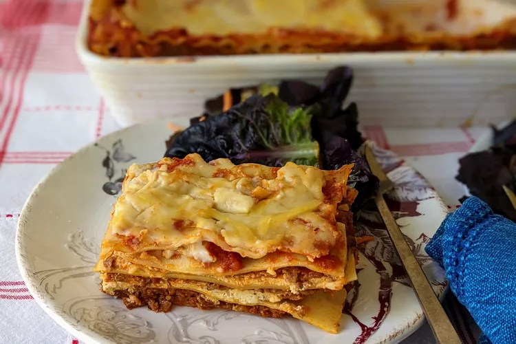

Lasagna
Home

Description
This recipe will create a delicious meal for you and your family in a budget friendly and easy to make way!
Follow our simple steps and you will have an amazing go-to for future family dinners that satisifies every pasta lover's dreams
Ingredients
- 1 lb Ground Beef
- 1 Diced Yellow Onion
- 1 10oz Can of Crushed Tomatoes
- 2 Tablespoons of Parsley/Thyme/Oregano Mixed
- 1 Teaspoon of Sugar
- 1 16 oz Box of Lasagna Pasta
- 2 Cups of Italian Cheese Blend
Steps
- Cook the ground meat in a skillet until browned and crumbly. Add the onion and continue cooking until it's translucent. Stir in the canned tomato products, half of the parsley, garlic, basil, 1.5 teaspoons of salt, oregano, and sugar.
- Boil the lasagna noodles in lightly salted water until they're al dente.
- Mix cottage cheese, Parmesan cheese, eggs, the remaining parsley, the remaining salt, and pepper in a bowl.
- Layer the ingredients according to the recipe (starting with sauce and ending with mozzarella) until the lasagna is assembled.
- Cover with foil and bake in the preheated oven for about half an hour. Remove the foil and continue baking until the top is golden brown.